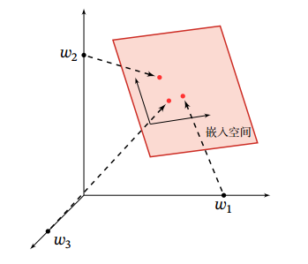
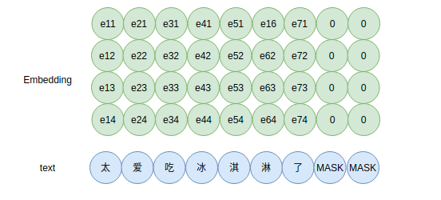

理解神经网络中Embedding层的原理
随着深度学习的发展及其在工程上的落地，Embedding技术便成为模型的标准组件，那么Embedding的原理是什么？本文老剖析一下Embedding的原理。
去年写过简单说说神经网络中的Embedding，简明扼要第讲了什么是Embedding，不过不够详细。本篇详细说说，并提供一个简单实现。
什么是Embedding？
在数学中，Embedding，即嵌入，意为把高维离散向量变换到低维连续向量，即如下示意图，

把高维的局部表示空间映射到一个非常低维的分布式表示空间，例如$[w_1, 0, 0]$，映射到一个更低维的稠密空间上。在用深度学习做 NLP 任务时，通常我们会在输入层，即字ID后接入一个 Embedding Layer，用于把离散的one-hot向量变为稠密的向量。因此Embedding Layer要做的事情其实和数学上的Embedding是一致的，不过我认为往数学上去理解Embedding Layer太复杂了，实则上它有更简单的理解。
关于 Embedding，首先我们看看一段熟悉的NLP代码片段，
1 | model = Sequential() |
除NLP外，Embedding在推荐系统上，常常用于用户数据（性别、地区等）、Item数据（如标签、标题、时间等）的表示。不过本人对这方面并不熟悉，有兴趣的读者可自行展开。
那么，代码中的Embedding是什么呢？在机器学习任务中，如使用朴素贝叶斯分类器进行文本分类时，我们常常使用如 word2vec 这类工具对句子或文档进行向量化。类比到深度神经网络，不严格来说，可以认为Embedding是一个提取词向量的组件。
NLP中的Embedding示意图，

对于每一个字（实则是字ID）输入到Embedding组件中，输出一个表示该字的向量，如上图，“太”字对应的ID输入，输出为向量$[e_{11}, e_{12}, e_{13}, e_{14}]$。这个字（词）向量的每一维可以当做是隐含的主题，只不过这些主题并没有明显的现实语义。
当然，我们无法确认，Embedding获得的词向量是否具有分布式表示的特点，需要在具体的任务、数据集上做实验才能验证。不过，即便无法确认，下游网络的学习能力能够确保获得对具体任务如分类有效的表示。分布式表示与分散式表示都是 Embedding 的一种。这里强调，Embedding 只是形式，而不是目的。
随着Transformer的发展，Embedding被再一步引申，如在Embedding的基础上发展出上下文Embedding，可见Embedding本身的基础性和重要性。此外，在词级别上，引申出句子和文档级别的Embedding。不过这并不是本文要讨论的内容，有兴趣可检索相关资料。
到此，我们比较啰嗦地讲了Embedding的作用，那么它到底是什么？原理是什么？
Embedding原理分析
假设有矩阵$\boldsymbol{E} \in \mathbb{R}^{n\times m}$，Embedding做的事情是，给定索引$i$，获得矩阵$\boldsymbol{E}$中的第$i$行$\boldsymbol{e}_{i} \in \mathbb{R}^{1\times m}$。这个操作可以使用矩阵乘法来表示，
一个直观的例子，
容易推广到多个索引的情况，
容易理解，在实际实现上，我们肯定不会使用矩阵乘法的方式来获得$e_{i}$，因为矩阵运算需要消耗不少资源，而转换为查表操作就能直接了当获得结果。因此，Embedding层可以理解为是一个全连接层，即编程中常用的Dense，由于输入端都是onehot或者可以转换为onehot形式。因此，直接使用查表的方法来替代矩阵相乘。
可以看到，原来Embedding是通过lookup的方式将高维稀疏向量转化为稠密向量，这个稠密的向量用于下游网络的特征提取。
side effect
Embedding实则是一个全连接的Dense层，onehot（字ID的向量形式）为输出，稠密向量为输出，因此Embedding带来如下优势：
- 大大降低维度，解决维度灾难，模型训练异常慢的问题
- 可计算词表相似性，onehot无法准确表达不同词之间的相似度
Embedding实现
Tensorflow2.0后去掉了placeholder、Session（执行 Graph 中的计算任务，负责把计算分发到 CPU 或 GPU 中），但保留了Variable、constant、Graph、Tensor等，正态来看变得更容易使用了。我们可以使用Tensorflow中的Keras API实现简单的Embedding，如下，
1 | import tensorflow as tf |
注意到，SimpleEmbedding中tf.nn.embedding_lookup是核心，其原理就是根据索引来找矩阵中的向量。
以上实现使用到embedding_lookup，使用代码来实践一下，
1 | params = np.random.random((10, 20)) |
有趣的是，通过tf.nn.embedding_lookup源码发现，其实现使用的是tf.gather。
此外，既然我们已经了解Embedding原理，那么我们训练词向量时就可以不限于通过语言模型来训练了，可以基于特定任务的词向量任务，如分类、匹配任务等。此外，不光是在 NLP 中，其他离散类型的数据都可以使用 Embedding 来获得表示。这个过程是有监督或者是自监督，因此和 SVD 不一样。
补充：以上有关代码以及更多的实验整理到tensorflow-padding-masking。
总结
Embedding是以每个字在给定分布随机初始化的随机向量而组成的可学习参数矩阵，也就是一个全连接Dense层，其以onehot为输入，稠密向量为输出，因此在实现上，用lookup查表来代替矩阵乘积以提高性能。
正如深入理解CNN及其网络架构设计最好的方式是忘掉卷积，理解Embedding最好的方式是忘掉数学上的术语：嵌入、流形、分布式语意、词向量等，它就是一个以给定分布随机初始化的随机向量，然后通过误差逆向传播更新，即可学习的随机向量。